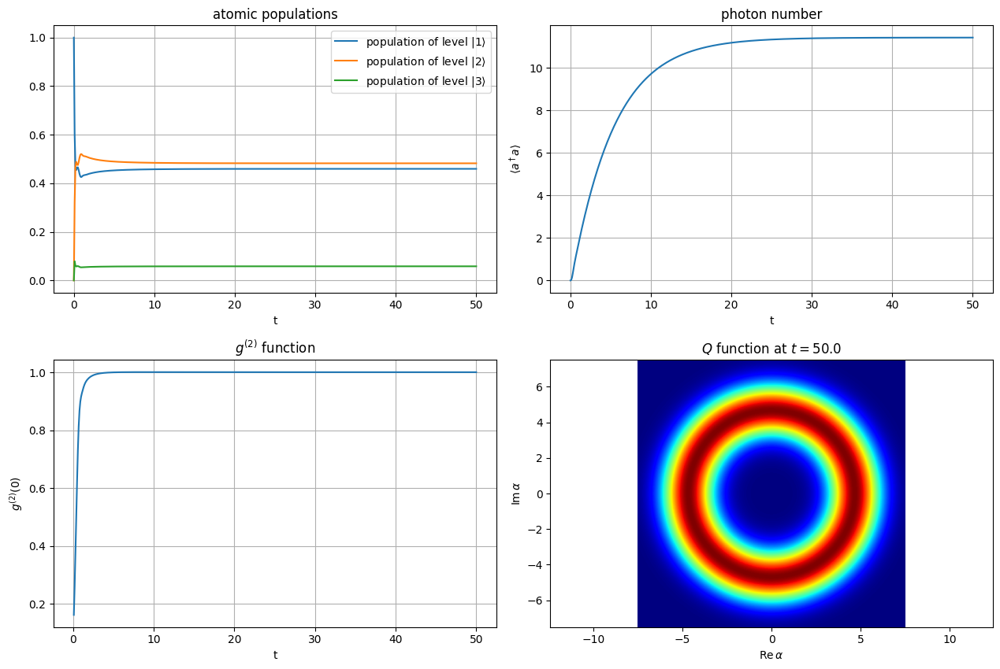
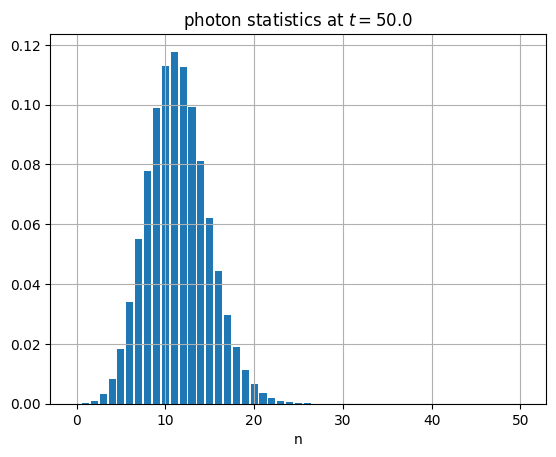

This notebook can be found ongithub
Heat-pumped three-level maser
Consider a three-level atom that interacts with two heat baths at temperatures $T_\mathrm{c}$ and $T_\mathrm{h}$, respectively, and a single cavity field mode. The cavity mode is further coupled to an environment at temperature $T_\mathrm{env}$.
The atomic transition $|1\rangle \leftrightarrow |3\rangle$ at frequency $\omega_\mathrm{h}:=\omega_3-\omega_1$ is coupled to the hot bath, the atomic transition $|2\rangle \leftrightarrow |3\rangle$ at frequency $\omega_\mathrm{c}:=\omega_3-\omega_2$ is coupled to the cold bath and the atomic transition $|1\rangle \leftrightarrow |2\rangle$ at frequency $\omega_\mathrm{f}:=\omega_2-\omega_1$ (the lasing transition) is coupled to the cavity mode.
The Hamiltonian
$H=H_\mathrm{free}+H_\mathrm{int}$
consists of the "free" atomic and cavity Hamiltonian
$H_\mathrm{free}=\hbar\omega_1 |1\rangle\langle 1|+\hbar\omega_2 |2\rangle\langle 2|+\hbar\omega_3 |3\rangle\langle 3|+\hbar\omega_\mathrm{f}a^\dagger a$
and the Jaynes-Cummings interaction
$H_\mathrm{int}=\hbar g\left(\sigma_{12}a^\dagger+\sigma_{21} a\right).$
The interaction with the various environmental heat baths is described by the Liouvillian
$\mathcal{L}\rho = \frac{\gamma_\mathrm{h}}{2}[\bar{n}(\omega_\mathrm{h},T_\mathrm{h})+1] \mathcal{D}[\sigma_{13}] + \frac{\gamma_\mathrm{h}}{2}\bar{n}(\omega_\mathrm{h},T_\mathrm{h}) \mathcal{D}[\sigma_{31}]\\ \quad + \frac{\gamma_\mathrm{c}}{2}[\bar{n}(\omega_\mathrm{c},T_\mathrm{c})+1] \mathcal{D}[\sigma_{23}] + \frac{\gamma_\mathrm{c}}{2}\bar{n}(\omega_\mathrm{c},T_\mathrm{c}) \mathcal{D}[\sigma_{32}]\\ \quad + \kappa[\bar{n}(\omega_\mathrm{f},T_\mathrm{env})+1] \mathcal{D}[a] + \kappa\bar{n}(\omega_\mathrm{f},T_\mathrm{env}) \mathcal{D}[a^\dagger],$
where the dissipator is defined as $\mathcal{D}[A]:= 2A\rho A^\dagger - A^\dagger A \rho -\rho A^\dagger A$.
The time evolution of the joint atom-field state is then given by the master equation
$\dot{\rho}(t) = \frac{1}{i\hbar}[H,\rho] + \mathcal{L}\rho.$
using QuantumOptics
using PyPlot
using LinearAlgebraconst nph=50 # cavity mode photon cutoff
const Th=100. # temperature of the hot bath
const Tc=20. # temperature of the cold bath
const Tenv=0. # environment temperature for the cavity
const omega1=0.
const omega2=30.
const omega3=150.
const omegaf=omega2-omega1 # cavity frequency (lasing frequency)
const omegah=omega3-omega1 # frequency of the atomic transition that is coupled to the hot bath
const omegac=omega3-omega2 # frequency of the atomic transition that is coupled to the cold bath
const g=5.
const kappa=0.1
const gammah=40.
const gammac=40.
const tmax=50.
const dt=.1
const tvec=[0.:dt:tmax;] # output times for expectation values (high resolution)
const dtrho=10.
const trhovec=[0.:dtrho:tmax;]; # output times for the density matrix (low resolution)const ba=NLevelBasis(3)
const bf=FockBasis(nph)
const b_comp=ba⊗bf
const psi1=nlevelstate(ba,1)
const psi2=nlevelstate(ba,2)
const psi3=nlevelstate(ba,3)
const proj1=projector(psi1)⊗one(bf)
const proj2=projector(psi2)⊗one(bf)
const proj3=projector(psi3)⊗one(bf)
const sigma13=transition(ba,1,3)⊗one(bf)
const sigma23=transition(ba,2,3)⊗one(bf)
const sigma12=transition(ba,1,2)⊗one(bf)
const a=one(ba)⊗destroy(bf)const Hfree=omega1*proj1+omega2*proj2+omega3*proj3+omegaf*dagger(a)*a
const Hint=g*(sigma12*dagger(a)+a*dagger(sigma12))
const H=Hfree+Hintconst R=Array{Float64}(undef,6)
nbar(omega::Float64,T::Float64)=(exp(omega/T)-1)^(-1) # hbar=k_B=1
R[1]=gammah*(nbar(omegah,Th)+1)
R[2]=gammah* nbar(omegah,Th)
R[3]=gammac*(nbar(omegac,Tc)+1)
R[4]=gammac* nbar(omegac,Tc)
R[5]=2*kappa*(nbar(omegaf,Tenv)+1)
R[6]=2*kappa* nbar(omegaf,Tenv)
const J=[sqrt(R[1])*sigma13,sqrt(R[2])*dagger(sigma13),
sqrt(R[3])*sigma23,sqrt(R[4])*dagger(sigma23),
sqrt(R[5])*a,sqrt(R[6])*dagger(a)]const trho=Array{Float64}(undef,length(trhovec))
const rho=[DenseOperator(b_comp) for k=1:length(trhovec)]
# This dictionary contains the operators whose expectation values should be
# computed with high resolution during the time evolution
const operators=Dict(:adagger_a=>a'*a,
:adagger_adagger_a_a=>a'*a'*a*a,
:population1=>proj1,
:population2=>proj2,
:population3=>proj3)
function compute_expvalues(τ,ρ)
index=findfirst(isapprox.(τ,trhovec)) # The comparison of floats is problematic
if !isnothing(index) # save ρ if τ is contained in throvec
trho[index]=τ
rho[index]=copy(ρ)
end
return Dict{Symbol,ComplexF64}(key=>expect(value,ρ) for (key,value) in operators)
endconst r0=dm(psi1)⊗dm(fockstate(bf,0))
normalize!(r0)
t,expvalues=timeevolution.master(tvec,r0,H,J;fout=compute_expvalues)g2=real.(getindex.(expvalues,:adagger_adagger_a_a)./getindex.(expvalues,:adagger_a).^2)
rhof=[ptrace(r,1) for r in rho]
x=[-7.5:0.01:7.5;]
qfunc_ss=qfunc(rhof[end],x,x); # steady-state Q functionfigure(figsize=[12.8,8.6])
subplot(2,2,1)
plot(t,real.(getindex.(expvalues,:population1)),label="population of level "*L"|1\rangle")
plot(t,real.(getindex.(expvalues,:population2)),label="population of level "*L"|2\rangle")
plot(t,real.(getindex.(expvalues,:population3)),label="population of level "*L"|3\rangle")
title("atomic populations")
xlabel("t")
legend()
grid()
subplot(2,2,2)
plot(t,real.(getindex.(expvalues,:adagger_a)))
title("photon number")
xlabel("t")
ylabel(L"\langle a^\dagger a\rangle")
grid()
subplot(2,2,3)
plot(tvec,g2)
title(L"g^{(2)}"*" function")
xlabel("t")
ylabel(L"g^{(2)}(0)")
grid()
subplot(2,2,4)
pcolormesh(x,x,transpose(real(qfunc_ss)),cmap="jet")
axis("equal")
title(L"Q"*" function at "*L"t="*string(tvec[end]))
xlabel(L"$\mathrm{Re}\,\alpha$")
ylabel(L"$\mathrm{Im}\,\alpha$")
tight_layout()
bar([0:nph;],real.(diag(rhof[end].data)))
title("photon statistics at "*L"t="*string(tvec[end]))
xlabel("n")
grid()